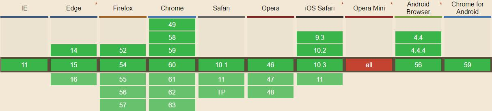

We typically use Cookie and Web Storage to store user information. Because sometimes we want to improve the user experience and reduce the workload of back end. As for this blog, I just want to conclude the difference between Cookie and Web Storage.
First of all, before discussing Cookie, we should know our navigators have another way to get offline data —— Application Cache.
1. Application Cache
(1) Offline detection
HTML5 gives us a good way to detect whether the device is offline or not. That is "navigator.onLine", if the value of attribute is "false", it means offline. And we can see the compatibility:

// how to use
if (navigator.onLine){
// normal work
}else{
// offline work
}
// we can also use "online" and "offline" in HTML5 to trigger events.
window.addEventListener("online", function(){});
window.addEventListener("offline", function(){});
(2) Application Cache
We should use a manifest file to list the resources we want to download and storage. Such as:
#CACHE MANIFEST
#Comment
file.js
file.css
And we should combine manifest file and our webpages:
<html manifest="/offline.manifest">
// /offline.manifest contains manifest file. And the MIME of this file must be "text/cache-manifest"
2. Cookie
(1) Restriction
IE6 : no more than 20 cookies
IE7+ : no more than 50 cookies
Firefox : no more than 50 cookies
Opera : no more than 30 cookies
Safari : no restriction
Chrome : no restriction
And if we still add cookies when the quantity reaches maximum, the navigator will delete previous cookies. And most of the navigators also set the max length of cookie —— 4096B.
(2) Composition of Cookie
An integrated Cookie contains Name, Value, Domain, Path, Expires and Secure mark. Such as follows:
HTTP/1.1 200 OK
Content-type: text/html
Set-Cookie: name=value; expires=Mon,22-Jan-07 07:10:24 GMT; domain=.wrox.com; path=/; secure
Other-header: other-header-value
But only the Name and Value are necessary, and only these two values will be sent to server.
(3) Cookie in JavaScript
All the names and values of cookies will be encoded by "encodeURIComponent()" so that you should use "decodeURIComponent()" to decode them. When you set a cookie, you should:
document.cookie = encodeURIComponent("name") + "=" + encodeURIComponent("Dylan");
I just write an object to operate the Cookie:
var OperateCookie = {
getCookie : function(name){
var cookiename = encodeURIComponent(name) + "=",
start = document.cookie.indexOf(cookiename),
end = 0,
value = null;
if (start > -1){ // find cookie
end = document.cookie.indexOf(";", start);
if (end === -1){ // the last cookie
end = document.cookie.length;
}
value = decodeURIComponent(document.cookie.substring(start+cookiename.length, end));
}
return value;
},
setCookie : function (name, value, expires, domain, path, secure){
var tempcookie = encodeURIComponent(name) + "=" + encodeURIComponent(value);
if (expires instanceof Date){
tempcookie += "; expires=" + expires.toGMTString();
}
if (path){
tempcookie += "; path=" + path;
}
// omit following code
document.cookie = tempcookie;
},
deleteCookie : function (name, domain, path, secure){
this.setCookie(name, "", new Date(0), path, domain, secure);
}
}
We can use this oject to add, delete and find cookie. From the code, we know that the "deleteCookie" method is just update the expire of cookie to "Date(0)", because it is just a old time, so the navigate will delete the cookie.
(4) SubCookie
What is SubCookie? As we all know, the number of cookie is limited, so some smart coder invent the SubCookie method to increase the amount of data storage of cookie.
The SubCookie is just like the following:
name=name1=value1&name2=value2&name3=value3
In this situation, if we want to get the value1, we should get the value of "name" first, and use "split('&')" to divide the sub cookie so that we can get what we want.
3. Storage of IE5.0
We know, IE5.0 doesn't support Cookie, and it has its own method to storage data: "save()" and "load()", and we should add "userData" behavior to a certain element.
<div style="behavior:url(#default%userData)" id="dataStore"></div>
// set data
var dataStore = document.getElementById("dataStore");
dataStore.setAttribute("name", "Dylan");
dataStore.save("Info"); // any name, just set a space to save the data.
// get data
dataStore.load("Info");
alert(dataStore.getAttribute("name")); // "Dylan"
4. Web Storage
(1) Method of Storage
clear(): delete all values. Firefox doesn't support this method
getItem(name) : find the value of "name"
key(index) : find the name in the index
removeItem(name) : delete data based on the "name"
setItem(name, value) : add data
(2) "sessionStorage" and "localStorage"
Both two objects can use those 5 methods above. The difference is that "sessionStorage" only save data until the navigator closed, but "localStorage" will storage the data for a long time unless you clear the data of Web Storage or the time out. Because they can use the same methods, I just want to show examples of "sessionStorage".
// save data, two methods
sessionStorage.setItem("name", "Dylan");
sessionStorage.name = "Dylan";
// get data, two methods
var name = sessionStorage.getItem("name");
var name = sessionStorage.name;
// get name in n, you can use this method to iterate the name and value
var name = sessionStorage.key(n);
// delete value, two methods
sessionStorage.removeItem("name");
delete sessionStorage.name // WebKit doesn't support this method
5. Conclucion
By comparing these methods, we can draw a conclusion that if we just want to save short and small data, we can use Cookie and Web Storage. But if there are amount of data, the Web Storage will perform better. As for me, I just want to use Web Storage for its simple grammar and large storage space, I do not have to care about data size.